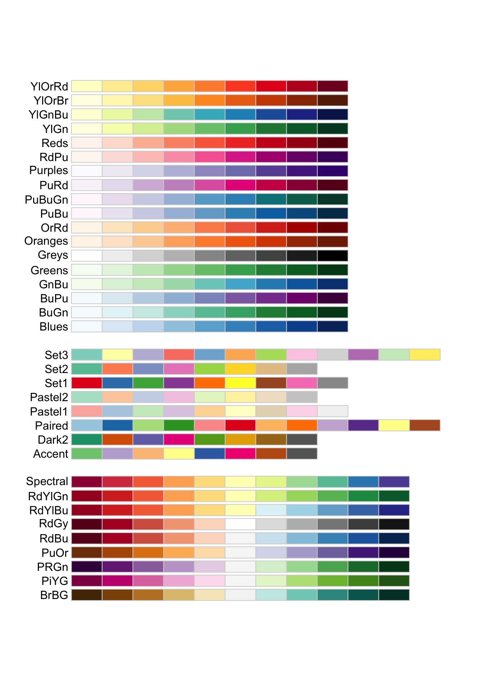
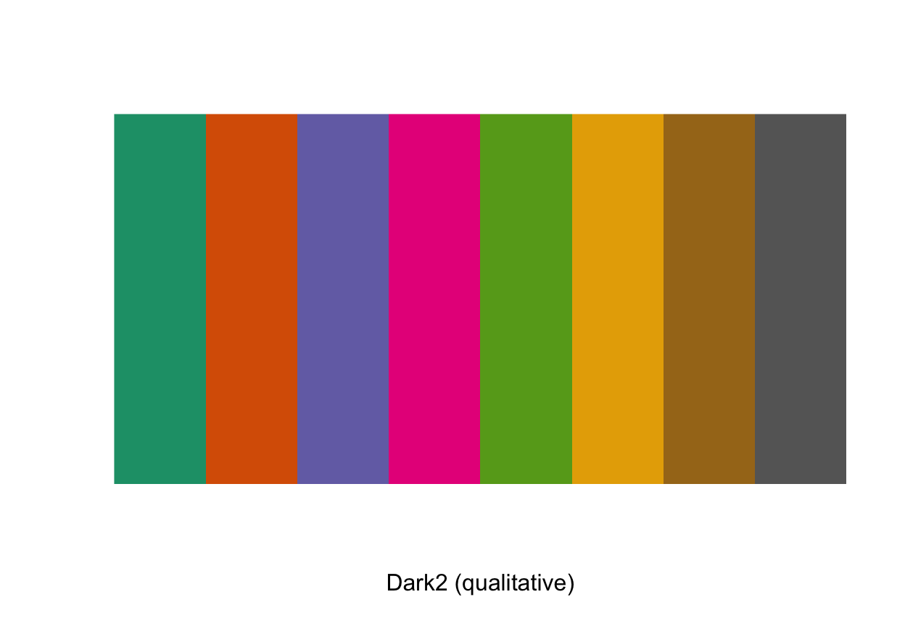
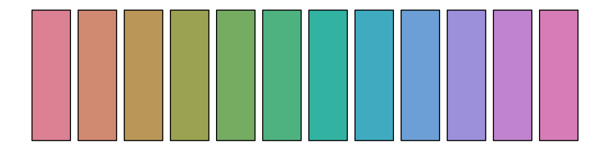
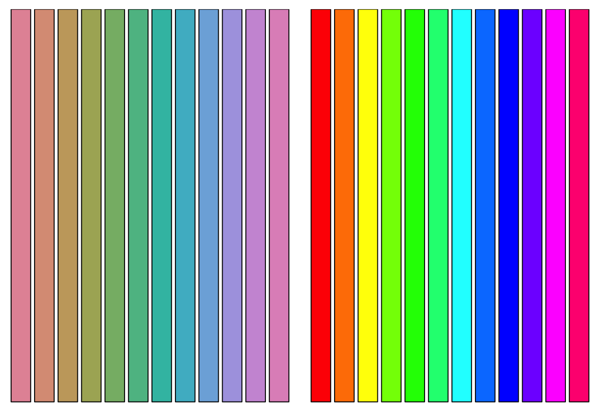
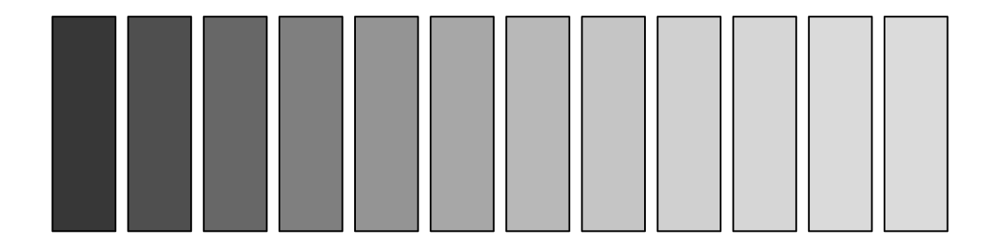
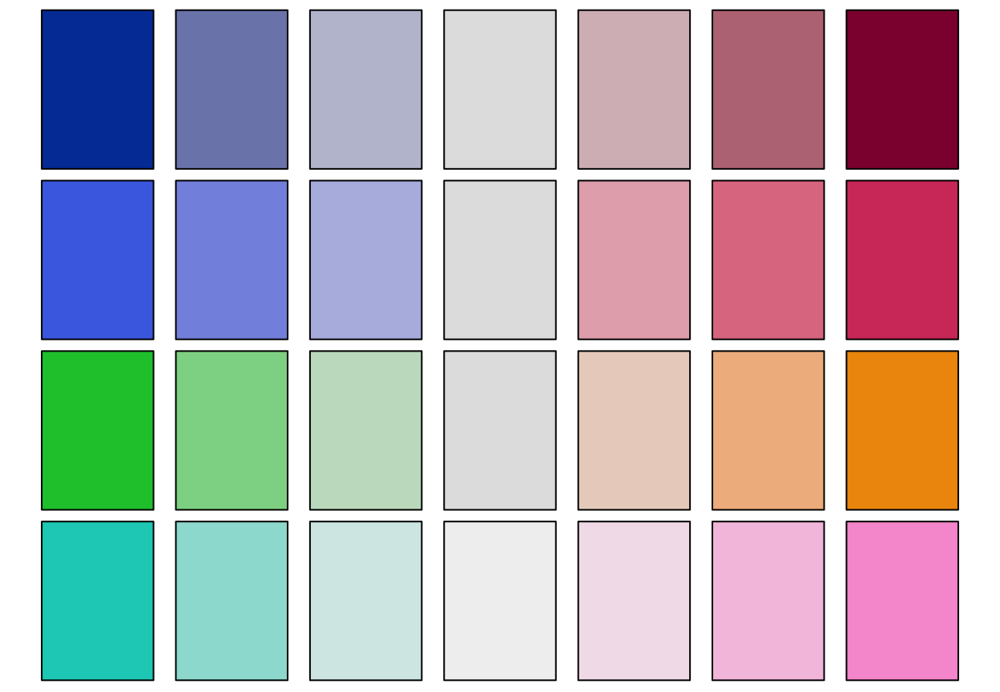

palettes.RmdThe RColorBrewer package, based on work by Cynthia Brewer1, provides designed palettes of colors to use.
# If not available, the package can be installed using `install.packages`. library(RColorBrewer)
Now, let’s display the RColorBrewer palettes:

There are three main classes of palettes in RColorBrewer:
We can also see a single RColorBrewer palette by defining the name and size of the palette using the brewer.pal(). For example, the following code selects “Dark2” palette that contains eight colors.
display.brewer.pal(n = 8, name = 'Dark2')

Another package to generate the sets of colors is the colorspace package2, which creates colors in a number of color spaces as well as functions to convert between color spaces. By contrast, the palettes in RColorBrewer are fixed.
The three dimensions of the HCL color model:
Hue: “color or shade”. \(H \in [0,360]\)
Chroma: “colorfulness, or intensity of color as compared to gray”. \(C \in [0,100]\)
Luminance: “brightness”, or amount of gray. \(L \in [0,100]\)
library(colorspace)
The rainbow_hcl() function provides a qualitative palette that is good for coding a categorical variable:
palette(rainbow_hcl(12)) par(mar = rep(0.5, 4)) barplot(rep(1, 12), col = 1:12, ann = FALSE, axes = FALSE)

# Compare base and colorspace palettes par(mfrow = c(1, 2), mar = rep(0, 4), oma = c(0.5, 0, 0.5, 0)) barplot(rep(1, 12), col = rainbow_hcl(12), ann = FALSE, axes = FALSE) barplot(rep(1, 12), col = rainbow(12), ann = FALSE, axes = FALSE)

The sequential_hcl() function provides a sequential palette that is good for coding numerical information that ranges in a certain interval (low values are considered to be uninteresting and high values are interesting). Below is an example of sequential palette that only varies luminance.
palette(sequential_hcl(12, c = 0, power = 2.2)) par(mar = rep(0.5, 4)) barplot(rep(1, 12), col = 1:12, ann = FALSE, axes = FALSE)

The diverge_hcl() function provides a diverging palette that is also good for coding numerical information that ranges in a certain interval but with a neutral value. Below are examples for several diverging palettes that have different pairs of hues and decreasing luminance contrasts:
par(mar = rep(0.25, 4), mfrow = c(4, 1), oma = c(0.25, 0, 0.25, 0)) # diverging red-blue colors palette(diverge_hcl(7)) barplot(rep(1, 7), col = 1:7, ann = FALSE, axes = FALSE) palette(diverge_hcl(7, c = 100, l = c(50, 90), power = 1)) barplot(rep(1, 7), col = 1:7, ann = FALSE, axes = FALSE) palette(diverge_hcl(7, h = c(130, 43), c = 100, l = c(70, 90))) barplot(rep(1, 7), col = 1:7, ann = FALSE, axes = FALSE) # diverging cyan-magenta colors palette(diverge_hcl(7, h = c(180, 330), c = 59, l = c(75, 95))) barplot(rep(1, 7), col = 1:7, ann = FALSE, axes = FALSE)

Achim Zeileis, Kurt Hornik, Paul Murrell (2009). Escaping RGBland: Selecting Colors for Statistical Graphics. Computational Statistics & Data Analysis, 53(9), 3259-3270. doi:10.1016/j.csda.2008.11.033↩︎